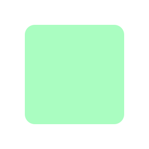
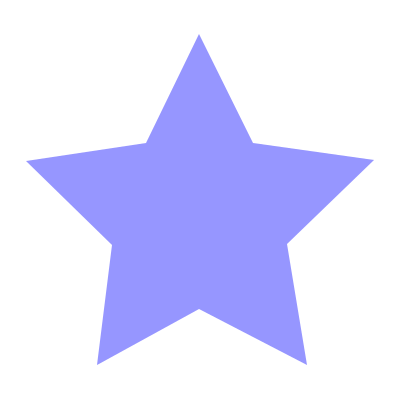
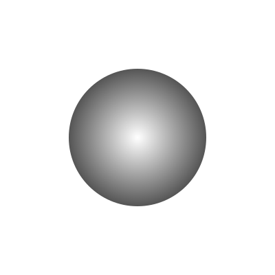
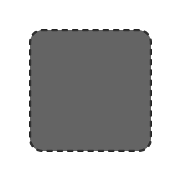
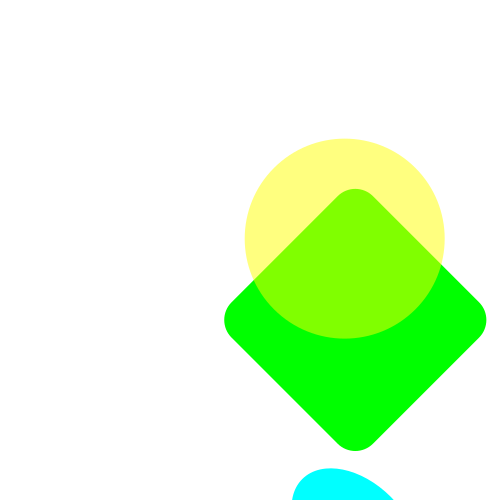
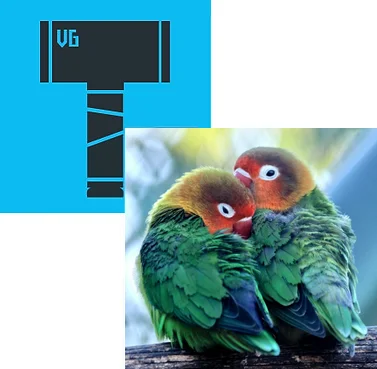
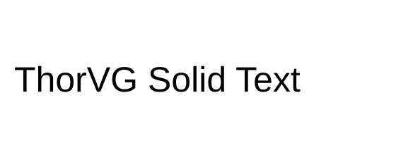
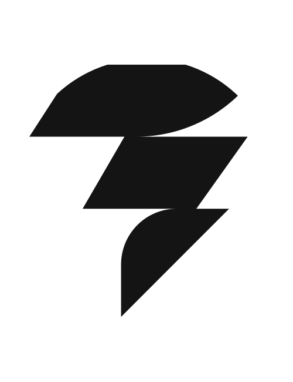

Basic Programming
This guide shows how to draw various graphic elements through ThorVG with simple examples. It assumes ThorVG is already installed — see Get Started if you haven't set that up yet.
The following is a quick-start covering the essential APIs. First, initialize the ThorVG engine. This prepares and runs the engine's internal steps.
// Initialize the ThorVG engine
tvg_engine_init(0);// Initialize the ThorVG engine
tvg::Initializer::init(0);import ThorVG from '@thorvg/webcanvas';
// Initialize the ThorVG engine
const TVG = await ThorVG.init({ renderer: 'gl' });The second parameter of the initializer requires the ThorVG designated threads number. To use the full capacity of the system, you can pass the number of threads to run ThorVG tasks.
The renderer option determines which rendering backend to use: gl for the WebGL backend with wide browser support, or wg for the WebGPU backend (requires Chrome/Edge 113+, Firefox 145+, or Safari 26+).
ThorVG renders vector scenes to the given canvas buffer. The following shows an example of how to prepare an empty canvas for drawing.
// A canvas target buffer
static uint32_t buffer[WIDTH * HEIGHT];
// Generate a software canvas
Tvg_Canvas canvas = tvg_swcanvas_create(TVG_ENGINE_OPTION_DEFAULT);
// Setup the canvas target
tvg_swcanvas_set_target(canvas, buffer, WIDTH, WIDTH, HEIGHT, TVG_COLORSPACE_ARGB8888);// A canvas target buffer
static uint32_t buffer[WIDTH * HEIGHT];
// Generate a canvas
auto canvas = tvg::SwCanvas::gen();
// Setup the canvas target
canvas->target(buffer, WIDTH, WIDTH, HEIGHT, tvg::ColorSpace::ARGB8888);// Create a canvas targeting an HTML canvas element
const canvas = new TVG.Canvas('#canvas', {
width: 800,
height: 600
});The target buffer requires five parameters: buffer memory, buffer stride size, canvas width, height and colorspace. The last parameter determines the format of the pixel color channels used during drawing on the canvas buffer.
The Canvas constructor requires a CSS selector for the target HTML canvas element and optional configuration. WebCanvas automatically manages the canvas buffer and handles the device pixel ratio for high-DPI displays.
Shape
Once a canvas is ready, you can create shapes by adding them to the canvas.
// Generate a shape
Tvg_Paint rect = tvg_shape_new();
// Append a rounded rectangle to the shape (x, y, w, h, rx, ry, clockwise)
tvg_shape_append_rect(rect, 50, 50, 200, 200, 20, 20, true);
// Set the shape's color to (r, g, b, a)
tvg_shape_set_fill_color(rect, 170, 253, 193, 255);
// Add the shape to the canvas
tvg_canvas_add(canvas, rect);// Generate a shape
auto rect = tvg::Shape::gen();
// Append a rounded rectangle to the shape (x, y, w, h, rx, ry)
rect->appendRect(50, 50, 200, 200, 20, 20);
// Set the shape's color to (r, g, b)
rect->fill(170, 253, 193);
// Add the shape to the canvas
canvas->add(rect);// Generate a shape
const rect = new TVG.Shape();
// Append a rounded rectangle to the shape (x, y, w, h, rx, ry)
rect.appendRect(50, 50, 200, 200, { rx: 20, ry: 20 });
// Set the shape's color to (r, g, b)
rect.fill(170, 253, 193);
// Add the shape to the canvas
canvas.add(rect);In the example above, a shape is generated and then a rounded rectangle is appended to it. ThorVG provides predefined shape types such as rectangle, circle and arc for the user's convenience. You can append any custom shape by using Paths. ThorVG allows you to append multiple forms into a shape, to compose a more complex one. A complex shape shares its properties, such as color, stroke, fill, etc., among the appended forms.
After a rounded rectangle is appended, its color is set and then the shape is added to the canvas. This shape from the example looks as follows.

Path
Besides predefined shape types, you can compose arbitrary shape types using a path concept. A path is a list of commands that are commonly used in traditional 2D vector drawing. Below you can see an example of how to define your own forms.
// Generate a shape
Tvg_Paint path = tvg_shape_new();
// Set the sequential path coordinates
tvg_shape_move_to(path, 199, 34);
tvg_shape_line_to(path, 253, 143);
tvg_shape_line_to(path, 374, 160);
tvg_shape_line_to(path, 287, 244);
tvg_shape_line_to(path, 307, 365);
tvg_shape_line_to(path, 199, 309);
tvg_shape_line_to(path, 97, 365);
tvg_shape_line_to(path, 112, 245);
tvg_shape_line_to(path, 26, 161);
tvg_shape_line_to(path, 146, 143);
// Complete the path
tvg_shape_close(path);
// Set the shape's color to (r, g, b, a)
tvg_shape_set_fill_color(path, 150, 150, 255, 255);
// Add the shape to the canvas
tvg_canvas_add(canvas, path);// Generate a shape
auto path = tvg::Shape::gen();
// Set the sequential path coordinates
path->moveTo(199, 34);
path->lineTo(253, 143);
path->lineTo(374, 160);
path->lineTo(287, 244);
path->lineTo(307, 365);
path->lineTo(199, 309);
path->lineTo(97, 365);
path->lineTo(112, 245);
path->lineTo(26, 161);
path->lineTo(146, 143);
// Complete the path
path->close();
// Set the shape's color to (r, g, b)
path->fill(150, 150, 255);
// Add the shape to the canvas
canvas->add(path);// Generate a shape
const path = new TVG.Shape();
// Set the sequential path coordinates
path.moveTo(199, 34)
.lineTo(253, 143)
.lineTo(374, 160)
.lineTo(287, 244)
.lineTo(307, 365)
.lineTo(199, 309)
.lineTo(97, 365)
.lineTo(112, 245)
.lineTo(26, 161)
.lineTo(146, 143)
// Complete the path
.close()
// Set the shape's color to (r, g, b)
.fill(150, 150, 255);
// Add the shape to the canvas
canvas.add(path);Lines and Bezier curves can be drawn with tvg_shape_move_to(), tvg_shape_line_to() and tvg_shape_cubic_to(). You can also set a preset list of commands using tvg_shape_append_path() for optimal data delivery.
By using the Path, lines and Bezier curves can be drawn. Additionally, you can set a preset list using Shape::appendPath() for optimal data delivery.
By using the Path, lines and Bezier curves can be drawn. Additionally, you can set a preset list using shape.appendPath() for optimal data delivery.
The output of the example is as follows.

Fill
ThorVG supports both solid color fills and gradient fills. You can use linear gradients and radial gradients to create rich visual effects.
// Generate a shape
Tvg_Paint circle = tvg_shape_new();
// Append a circle to the shape (cx, cy, rx, ry, clockwise)
tvg_shape_append_circle(circle, 200, 200, 100, 100, true);
// Generate a radial gradient
Tvg_Gradient fill = tvg_radial_gradient_new();
// Set the radial gradient geometry info (cx, cy, r, fx, fy, fr)
tvg_radial_gradient_set(fill, 200, 200, 150, 200, 200, 0);
// Gradient colors
Tvg_Color_Stop colorStops[2];
// 1st color values (offset, r, g, b, a)
colorStops[0] = (Tvg_Color_Stop){0.0f, 255, 255, 255, 255};
// 2nd color values (offset, r, g, b, a)
colorStops[1] = (Tvg_Color_Stop){1.0f, 0, 0, 0, 255};
// Set the gradient colors info
tvg_gradient_set_color_stops(fill, colorStops, 2);
// Set the shape fill
tvg_shape_set_gradient(circle, fill);
// Add the shape to the canvas
tvg_canvas_add(canvas, circle);// Generate a shape
auto circle = tvg::Shape::gen();
// Append a circle to the shape (cx, cy, rx, ry)
circle->appendCircle(200, 200, 100, 100);
// Generate a radial gradient
auto fill = tvg::RadialGradient::gen();
// Set the radial gradient geometry info (cx, cy, radius)
fill->radial(200, 200, 150);
// Gradient colors
tvg::Fill::ColorStop colorStops[2];
// 1st color values (offset, r, g, b, a)
colorStops[0] = {0.0, 255, 255, 255, 255};
// 2nd color values (offset, r, g, b, a)
colorStops[1] = {1.0, 0, 0, 0, 255};
// Set the gradient colors info
fill->colorStops(colorStops, 2);
// Set the shape fill
circle->fill(fill);
// Add the shape to the canvas
canvas->add(circle);// Generate a shape
const circle = new TVG.Shape();
// Append a circle to the shape (cx, cy, rx, ry)
circle.appendCircle(200, 200, 100, 100);
// Generate a radial gradient (cx, cy, radius)
const fill = new TVG.RadialGradient(200, 200, 150);
// Set the gradient colors (offset, [r, g, b, a])
fill.addStop(0, [255, 255, 255, 255]);
fill.addStop(1, [0, 0, 0, 255]);
// Set the shape fill
circle.fill(fill);
// Add the shape to the canvas
canvas.add(circle);The C API's radial gradient takes both the gradient circle (cx, cy, r) and a focal point (fx, fy, fr) for advanced effects. Passing the same center for both, with a focal radius of 0, produces a simple radial gradient like the C++/JS examples.
The output of the example is as follows.

Stroke
Stroking enables you to draw the outline of shapes as well as lines. You can simply add stroke properties to a shape if needed. Stroke supports both a solid color and a gradient fill, and also 4 major properties — width, cap, join and dash pattern.
// Generate a shape
Tvg_Paint rect = tvg_shape_new();
// Append a round rectangle to the shape (x, y, w, h, rx, ry, clockwise)
tvg_shape_append_rect(rect, 50, 50, 200, 200, 20, 20, true);
// Set the shape's color to (r, g, b, a)
tvg_shape_set_fill_color(rect, 100, 100, 100, 255);
// Set the stroke's width
tvg_shape_set_stroke_width(rect, 4);
// Set the stroke's color to (r, g, b, a)
tvg_shape_set_stroke_color(rect, 50, 50, 50, 255);
// Set the stroke's join style
tvg_shape_set_stroke_join(rect, TVG_STROKE_JOIN_ROUND);
// Set the stroke's cap style
tvg_shape_set_stroke_cap(rect, TVG_STROKE_CAP_ROUND);
// Set the stroke's dash pattern (line, gap)
float pattern[2] = {7, 10};
tvg_shape_set_stroke_dash(rect, pattern, 2, 0);
// Add the shape to the canvas
tvg_canvas_add(canvas, rect);// Generate a shape
auto rect = tvg::Shape::gen();
// Append a round rectangle to the shape (x, y, w, h, rx, ry)
rect->appendRect(50, 50, 200, 200, 20, 20);
// Set the shape's color to (r, g, b)
rect->fill(100, 100, 100);
// Set the stroke's width
rect->strokeWidth(4);
// Set the stroke's color to (r, g, b)
rect->strokeFill(50, 50, 50);
// Set the stroke's join style
rect->strokeJoin(tvg::StrokeJoin::Round);
// Set the stroke's cap style
rect->strokeCap(tvg::StrokeCap::Round);
// Set the stroke's dash pattern (line, gap)
float pattern[2] = {7, 10};
rect->strokeDash(pattern, 2);
// Add the shape to the canvas
canvas->add(rect);// Generate a shape
const rect = new TVG.Shape();
// Append a round rectangle to the shape (x, y, w, h, rx, ry)
rect.appendRect(50, 50, 200, 200, { rx: 20, ry: 20 });
// Set the shape's color to (r, g, b)
rect.fill(100, 100, 100);
// Set the stroke properties
rect.stroke({
width: 4,
color: [50, 50, 50, 255],
join: 'round',
cap: 'round'
});
// Add the shape to the canvas
canvas.add(rect);The output of the example is as follows.

Scene and Transformation
ThorVG provides an interface to build Paint groups by composing multiple Paints. This is useful when you consider a scene-graph structure and manipulate a scene as a control unit. The code below shows how to use the ThorVG Scene and transform it.
// Generate a Scene
Tvg_Paint scene = tvg_scene_new();
// Generate a round rectangle
Tvg_Paint rect = tvg_shape_new();
tvg_shape_append_rect(rect, -235, -250, 400, 400, 50, 50, true);
tvg_shape_set_fill_color(rect, 0, 255, 0, 255);
// Add the rectangle to the scene
tvg_scene_add(scene, rect);
// Generate a circle
Tvg_Paint circle = tvg_shape_new();
tvg_shape_append_circle(circle, -165, -150, 200, 200, true);
// Set the shape's color to (r, g, b, a)
tvg_shape_set_fill_color(circle, 255, 255, 0, 127);
// Add the circle to the scene
tvg_scene_add(scene, circle);
// Generate an ellipse
Tvg_Paint ellipse = tvg_shape_new();
tvg_shape_append_circle(ellipse, 265, 250, 150, 100, true);
tvg_shape_set_fill_color(ellipse, 0, 255, 255, 255);
// Add the ellipse to the scene
tvg_scene_add(scene, ellipse);
// Transform the scene
tvg_paint_translate(scene, 350, 350);
tvg_paint_scale(scene, 0.5);
tvg_paint_rotate(scene, 45);
// Add the scene to the canvas
tvg_canvas_add(canvas, scene);// Generate a Scene
auto scene = tvg::Scene::gen();
// Generate a round rectangle
auto rect = tvg::Shape::gen();
rect->appendRect(-235, -250, 400, 400, 50, 50);
rect->fill(0, 255, 0);
// Add the rectangle to the scene
scene->add(rect);
// Generate a circle
auto circle = tvg::Shape::gen();
circle->appendCircle(-165, -150, 200, 200);
// Set the shape's color to (r, g, b, a)
circle->fill(255, 255, 0, 127);
// Add the circle to the scene
scene->add(circle);
// Generate an ellipse
auto ellipse = tvg::Shape::gen();
ellipse->appendCircle(265, 250, 150, 100);
ellipse->fill(0, 255, 255);
// Add the ellipse to the scene
scene->add(ellipse);
// Transform the scene
scene->translate(350, 350);
scene->scale(0.5);
scene->rotate(45);
// Add the scene to the canvas
canvas->add(scene);// Generate a Scene
const scene = new TVG.Scene();
// Generate a round rectangle
const rect = new TVG.Shape();
rect.appendRect(-235, -250, 400, 400, { rx: 50, ry: 50 });
rect.fill(0, 255, 0);
// Add the rectangle to the scene
scene.add(rect);
// Generate a circle
const circle = new TVG.Shape();
circle.appendCircle(-165, -150, 200, 200);
// Set the shape's color to (r, g, b, a)
circle.fill(255, 255, 0, 127);
// Add the circle to the scene
scene.add(circle);
// Generate an ellipse
const ellipse = new TVG.Shape();
ellipse.appendCircle(265, 250, 150, 100);
ellipse.fill(0, 255, 255);
// Add the ellipse to the scene
scene.add(ellipse);
// Transform the scene
scene.translate(350, 350)
.scale(0.5)
.rotate(45);
// Add the scene to the canvas
canvas.add(scene);All kinds of Paint type nodes (Shape, Scene and Picture) can be added to the Scene as its children. You can scale this logic and build a complex scene by compositing multiple Scenes. In the example, we create a scene-graph tree and demonstrate how to transform it using translate, scale and rotate.
The output of the example is as follows.

Picture
The Picture is a special component that is designed to draw a scene on the Canvas from image data. ThorVG supports several image formats including vector-based and bitmap-based formats.
// Generate a picture (svg)
Tvg_Paint svg = tvg_picture_new();
// Load an svg file
tvg_picture_load(svg, "logo.svg");
// Add the picture to the canvas
tvg_canvas_add(canvas, svg);
// Generate a picture (png)
Tvg_Paint png = tvg_picture_new();
// Load a png file
tvg_picture_load(png, "parrots.png");
// Set the desired size
tvg_picture_set_size(png, 300, 300);
// Set the position
tvg_paint_translate(png, 150, 150);
// Add the picture to the canvas
tvg_canvas_add(canvas, png);// Generate a picture (svg)
auto svg = tvg::Picture::gen();
// Load an svg file
svg->load("logo.svg");
// Add the picture to the canvas
canvas->add(svg);
// Generate a picture (png)
auto png = tvg::Picture::gen();
// Load a png file
png->load("parrots.png");
// Set the desired size
png->size(300, 300);
// Set the position
png->translate(150, 150);
// Add the picture to the canvas
canvas->add(png);// Generate a picture (svg)
const svg = new TVG.Picture();
// Load an svg file
const svgText = await (await fetch('logo.svg')).text();
svg.load(svgText, { type: 'svg' });
// Add the picture to the canvas
canvas.add(svg);
// Generate a picture (png)
const png = new TVG.Picture();
// Load a png file
const pngData = await (await fetch('parrots.png')).arrayBuffer();
png.load(new Uint8Array(pngData), { type: 'png' });
// Set the desired size
png.size(300, 300);
// Set the position
png.translate(150, 150);
// Add the picture to the canvas
canvas.add(png);The output of the example is as follows.

Text
ThorVG offers robust text rendering capabilities, including support for Scalable TrueType Fonts (TTF). It efficiently handles Unicode text, accepting UTF-8 (or ASCII) characters as input.
// Load a global font data
tvg_font_load("arial.ttf");
// Generate a solid color text for displaying
Tvg_Paint text = tvg_text_new();
// Set the font name and font size
tvg_text_set_font(text, "Arial");
tvg_text_set_size(text, 50);
// Set the text to display
tvg_text_set_text(text, "ThorVG Solid Text");
// Set the text color (r, g, b)
tvg_text_set_color(text, 0, 0, 0);
// Set the position
tvg_paint_translate(text, 150, 150);
// Add the text to the canvas
tvg_canvas_add(canvas, text);// Load a global font data
tvg::Text::load(EXAMPLE_DIR"/arial.ttf");
// Generate a solid color text for displaying
auto text = tvg::Text::gen();
// Set the font name and font size
text->font("Arial", 50);
// Set the text to display
text->text("ThorVG Solid Text");
// Set the text color (r, g, b)
text->fill(0, 0, 0);
// Set the position
text->translate(150, 150);
// Add the text to the canvas
canvas->add(text);// Load a custom font
const fontData = await fetch('arial.ttf').then((r) => r.arrayBuffer());
TVG.Font.load('Arial', new Uint8Array(fontData));
// Generate a solid color text for displaying
const text = new TVG.Text();
// Set the font name and font size
text.font('Arial').fontSize(50);
// Set the text to display
text.text('ThorVG Solid Text');
// Set the text color (r, g, b)
text.fill(0, 0, 0);
// Set the position
text.translate(150, 150);
// Add the text to the canvas
canvas.add(text);Note that the global font data loaded into ThorVG is typically shared among various text objects. This font data is automatically released when the ThorVG engine is terminated. If you need to immediately free up the font resources, you can manually unload the font data with the font unload API.
Note that the global font data loaded into ThorVG is typically shared among various text objects. This font data is automatically released when the ThorVG engine is terminated, which is done using canvas.destroy(). If you need to immediately free up the font resources, you can manually unload the font data using the TVG.Font.unload() API.
The output of the example is as follows.

Composition
ThorVG applies composition for visual effects such as blending, masking, filtering, etc. You should be aware, though, that a composition may perform additional render-processing on an off-screen buffer. The excessive usage of a composition won't be helpful if lightweight processing is a priority for you.
// Generate a picture
Tvg_Paint picture = tvg_picture_new();
tvg_picture_load(picture, "logo.svg");
// Generate a circle for masking
Tvg_Paint mask = tvg_shape_new();
tvg_shape_append_circle(mask, 250, 325, 225, 225, true);
tvg_shape_set_fill_color(mask, 255, 255, 255, 255);
// Set the circle's alpha mask to the picture
tvg_paint_set_mask_method(picture, mask, TVG_MASK_METHOD_ALPHA);
// Add the picture to the canvas
tvg_canvas_add(canvas, picture);// Generate a picture
auto picture = tvg::Picture::gen();
picture->load(EXAMPLE_DIR"/logo.svg");
// Generate a circle for masking
auto mask = tvg::Shape::gen();
mask->appendCircle(250, 325, 225, 225);
mask->fill(255, 255, 255, 255);
// Set the circle's alpha mask to the picture
picture->mask(mask, tvg::MaskMethod::Alpha);
// Add the picture to the canvas
canvas->add(picture);// Generate a picture
const picture = new TVG.Picture();
const svgText = await (await fetch('logo.svg')).text();
picture.load(svgText, { type: 'svg' });
// Generate a circle for masking
const mask = new TVG.Shape();
mask.appendCircle(250, 325, 225, 225);
mask.fill(255, 255, 255, 255);
// Set the circle's alpha mask to the picture
picture.mask(mask, TVG.MaskMethod.Alpha);
// Add the picture to the canvas
canvas.add(picture);The output of the example is as follows.

Animation
The Animation component facilitates the manipulation of animatable elements, such as Lottie. It enables the display and fundamental control of animated frames. Essentially, one animation instance corresponds to a single picture instance.
// Generate an animation
Tvg_Animation animation = tvg_animation_new();
// Acquire a picture associated with the animation
Tvg_Paint picture = tvg_animation_get_picture(animation);
// Load an animation file
tvg_picture_load(picture, "lottie.json");
// Figure out the animation duration time in seconds
float duration;
tvg_animation_get_duration(animation, &duration);
// Add the picture to the canvas
tvg_canvas_add(canvas, picture);// Generate an animation
auto animation = tvg::Animation::gen();
// Acquire a picture associated with the animation
auto picture = animation->picture();
// Load an animation file
picture->load("lottie.json");
// Figure out the animation duration time in seconds
auto duration = animation->duration();
// Add the picture to the canvas
canvas->add(picture);// Generate an animation
const animation = new TVG.Animation();
// Load an animation file
const lottieData = await (await fetch('lottie.json')).text();
animation.load(lottieData);
// Acquire the picture associated with the animation
const picture = animation.picture;
// Add the picture to the canvas
canvas.add(picture);
// Play the animation
animation.setLoop(true);
animation.play((frame) => {
canvas.update().render();
});Let's suppose the progress variable determines the position of the animation, ranging from 0 to 1 based on the total duration time of the animation. Adjusting the progress value allows you to control the animation at the desired position. Afterwards, the canvas is updated to redraw the picture with the updated animation frame.
// Set the current animation frame to display
float totalFrame;
tvg_animation_get_total_frame(animation, &totalFrame);
tvg_animation_set_frame(animation, totalFrame * progress);
// Update the picture to be redrawn
tvg_canvas_update(canvas);// Set the current animation frame to display
animation->frame(animation->totalFrame() * progress);
// Update the picture to be redrawn
canvas->update(animation->picture());The play() callback above already drives the animation frame by frame — no manual frame math is needed for the common case.
Drawing, the final step
Once all paint nodes have been added to the canvas, you can request the drawing task as the final step.
tvg_canvas_draw(canvas, true);
tvg_canvas_sync(canvas);canvas->draw();
canvas->sync();canvas.update();
canvas.render();Calling draw() triggers the preprocessing stage of the rendering pipeline, but it does not perform rasterization. The actual rasterization occurs when sync() is invoked. Since all rendering tasks are executed asynchronously under the hood, you must call sync() at an appropriate point to ensure proper synchronization. Once synchronization completes, the rendered image becomes available in the target buffer.
Calling canvas.update() triggers the preprocessing stage of the rendering pipeline, but it does not perform rasterization. The actual rasterization occurs when canvas.render() is invoked.
More examples
There are plenty of sample code in thorvg/examples to help you in understanding the ThorVG APIs.
To execute these examples, you can build them with the following meson build option.
meson setup builddir -Dexamples=trueNote that these examples require the SDL dev package for launching. If you're using a Linux-based OS, you can easily install this package from your OS distribution server. For Ubuntu, you can install it with this command.
apt-get install libsdl2-devAlternatively, you can read the official guidance here for other platforms. For more information, please visit the official SDL site.
You can try out ThorVG WebCanvas APIs interactively in the ThorVG Playground. The playground provides live code examples and allows you to experiment with various features in real-time.